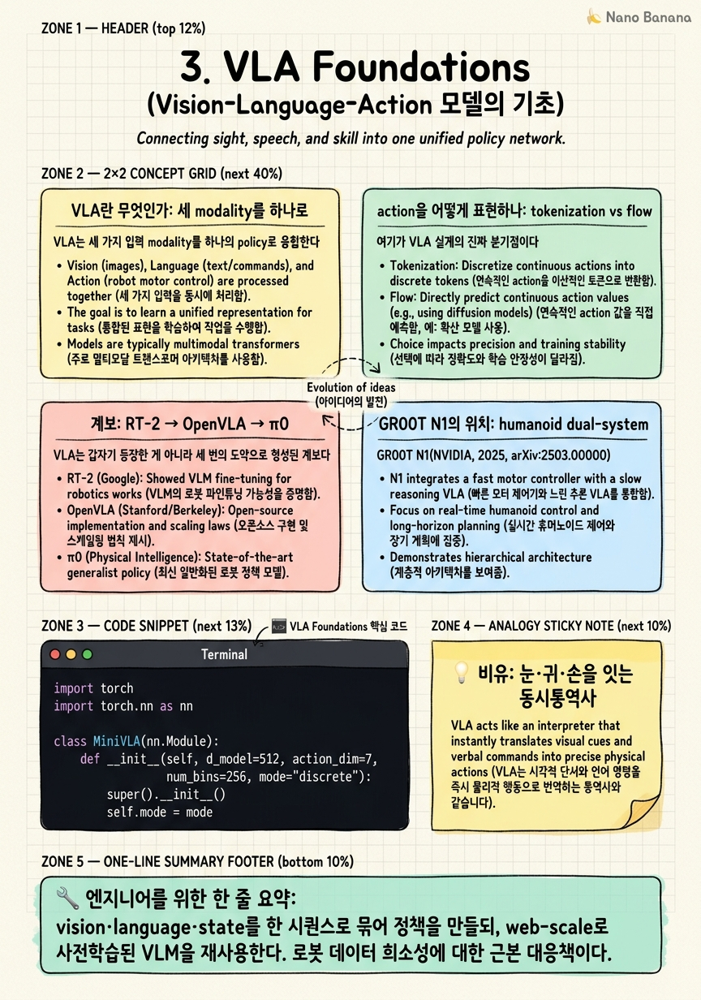

VLA Foundations

🎯 학습 목표
- VLA가 vision·language·action을 하나의 시퀀스 모델로 묶는 방식을 설명할 수 있다
- action tokenization(discretization vs flow-based)의 트레이드오프를 안다
- RT-2·OpenVLA·π0의 핵심 차이를 표로 비교할 수 있다
- VLM backbone을 action에 재사용하는 것의 이점과 한계를 안다
- GR00T N1이 이 계보의 어디에 위치하는지 안다
지난 두 챕터에서 우리는 NVIDIA가 navigation과 manipulation을 하나로 합치려 한다는 서사(Ch1)와, mobility 특화였던 COMPASS가 데이터 엔진으로 재배치되는 경로(Ch2)를 봤다. 그런데 '하나로 합친다'는 말의 실체는 무엇인가? 두 과제를 잇는 접착제는 정책의 표현(representation) 그 자체다. GR00T가 채택한 그 표현이 바로 VLA(Vision-Language-Action) 모델이다. 이 챕터는 VLA를 '왜 이게 로봇 generalist의 기본 문법이 됐는가'라는 각도에서 해부한다.
VLA의 핵심 아이디어는 한 문장으로 요약된다: vision 관측, 언어 지시, 그리고 로봇 상태(state)를 하나의 policy representation으로 묶어 action을 출력하되, 이미 web-scale로 사전학습된 VLM(Vision-Language Model) backbone을 action 예측에 재사용한다. 로봇 데이터는 인터넷 텍스트·이미지에 비해 몇 자릿수 적다. 그래서 '로봇 정책을 처음부터 학습'하는 대신, VLM이 이미 획득한 semantic·spatial prior 위에 action head만 얹는 전략이 지배적 문법이 됐다. RT-2가 이 전략의 원형을 제시했고, OpenVLA가 오픈소스로 대중화했으며, π0가 continuous action으로 고주파·정밀 제어의 문을 열었다.
이 챕터에서 반드시 넘어야 할 개념의 고비는 action tokenization이다. 언어 모델은 이산(discrete) 토큰을 뱉는 기계인데, 로봇의 action은 본질적으로 연속(continuous)값이다. 이 간극을 어떻게 메우는가 — action을 텍스트 토큰처럼 이산화(discretize)하느냐, 아니면 flow-matching/diffusion으로 연속 분포를 직접 생성하느냐 — 가 VLA 설계의 분기점이며, GR00T N1이 dual-system으로 이 트레이드오프를 어떻게 우회하는지가 이 챕터의 종착점이다.
핵심 내용
VLA란 무엇인가: 세 modality를 하나로
VLA는 세 가지 입력 modality를 하나의 policy로 융합한다. Vision(카메라 관측 o_t), Language(자연어 지시 ℓ, 예: 'pick up the red cup'), 그리고 로봇 자신의 proprioceptive state(관절 각도·속도 q_t). 출력은 action a_t — 관절 토크, end-effector 변위, 또는 base velocity 같은 제어 명령이다. 목표는 정책 분포 π(a_t | o_t, ℓ, q_t)를 학습하는 것이다.
왜 이 셋을 굳이 '하나의' 모델로 묶는가? 전통적 로봇 스택은 perception(무엇이 보이는가), planning(무엇을 할까), control(어떻게 움직일까)을 분리된 모듈로 두었다. 이 분리는 각 모듈을 독립 최적화하기엔 좋지만, 모듈 경계에서 정보가 손실된다. 'red cup'이라는 언어 개념이 perception의 detection 박스로 압축되고, 다시 planning의 waypoint로 압축되면서 'cup의 미끄러운 표면'이나 '옆에 놓인 유리잔' 같은 맥락은 증발한다. VLA는 이 경계를 없애고, 언어의 semantic이 raw action까지 end-to-end로 흐르게 한다.
핵심 트릭은 backbone의 재사용이다. VLM(예: PaLI, SigLIP+Llama, Eagle 계열)은 이미 수십억 장의 이미지-텍스트 쌍으로 학습돼 'red', 'cup', 'left of' 같은 개념의 grounding을 획득했다. VLA는 이 pretrained VLM을 그대로 가져와, 마지막에 action을 뽑는 경로만 새로 붙인다. 그 결과 로봇 데이터가 적어도 '빨간 물체가 무엇인지'를 다시 배울 필요가 없다 — VLM이 이미 안다. 이것이 VLA가 emergent generalization(학습 때 본 적 없는 물체·지시에 대한 일반화)을 보이는 근본 이유다.
형식적으로 VLA는 조건부 시퀀스 모델이다. 이미지는 vision encoder를 거쳐 토큰열이 되고, 지시는 텍스트 토큰이 되며, 이 둘(때로는 state 토큰까지)이 하나의 시퀀스로 concat되어 transformer에 들어간다. 그 위에서 action을 '어떻게 읽어낼 것인가'가 다음 절의 주제다. 즉 VLA의 정체성은 '입력을 묶는 방식'보다 '출력 action을 표현하는 방식'에서 갈린다.
action을 어떻게 표현하나: tokenization vs flow
여기가 VLA 설계의 진짜 분기점이다. Transformer 기반 언어 모델은 이산 vocabulary 위에서 next-token을 예측하도록 설계됐다. 그런데 로봇 action a_t ∈ ℝ^d 는 연속값이다(예: 7-DoF arm이면 7차원 실수 벡터). 이 임피던스 불일치(impedance mismatch)를 해소하는 두 갈래 접근이 있다.
첫째, discretization(이산화) 접근. 각 action 차원을 예컨대 256개 bin으로 균등 분할해, 연속값을 정수 토큰으로 매핑한다. 그러면 action은 그냥 '또 하나의 언어'가 되어 VLM이 이미 가진 텍스트 head를 거의 그대로 재사용할 수 있다. RT-2는 실제로 action을 텍스트 문자열 토큰으로 취급해, action 예측을 translation 문제처럼 다뤘다. OpenVLA도 discretized action token(차원당 256 bin)을 쓴다. 장점은 명료하다 — VLM 재사용이 극도로 쉽고, 학습이 표준 cross-entropy로 단순하며, autoregressive 생성 인프라를 그대로 쓴다. 단점도 명료하다: bin 경계가 정밀도의 상한을 만들고(quantization error), 고차원 action을 토큰으로 펼치면 시퀀스가 길어져 고주파 제어(수백 Hz)에 불리하다.
둘째, flow/diffusion 기반 continuous 접근. action을 이산화하지 않고, 연속 분포를 직접 생성한다. π0(Physical Intelligence)는 flow-matching을 써서 VLM backbone 위에 'action expert'를 붙이고, noise에서 action chunk로 흐르는 vector field를 학습한다. Diffusion policy 계열도 같은 철학이다 — 목표 action에 노이즈를 씌웠다 제거하는 denoising 과정으로 연속 action을 복원한다. 장점: quantization 손실이 없어 정밀하고, action chunk(여러 timestep을 한 번에)를 뽑아 50 Hz 이상 고주파 제어에 유리하며, multimodal 분포(여러 그럴듯한 동작)를 자연스럽게 표현한다. 단점: 학습이 복잡하고(flow matching loss, 여러 denoising step), VLM의 이산 토큰 인프라와 이질적이라 backbone 통합에 별도 설계가 필요하다.
트레이드오프를 좌표계로 정리하면 이렇다. discretization은 'VLM 재사용의 용이성'과 'reasoning과의 자연스러운 통합'을 사고, 그 대가로 '정밀도·제어 주파수'를 지불한다. flow는 정반대다. 실무의 결론은 대부분 하이브리드로 수렴한다 — 느리게 도는 reasoning/semantic 경로는 이산 토큰으로, 빠르게 도는 저수준 motor 경로는 continuous head로. GR00T N1의 dual-system이 정확히 이 하이브리드의 구체화이며, 다음 절에서 다룬다.
계보: RT-2 → OpenVLA → π0
VLA는 갑자기 등장한 게 아니라 세 번의 도약으로 형성된 계보다. 각 단계는 앞 단계의 한계를 정확히 겨냥한다.
RT-2(Google DeepMind, 2023)는 원형을 제시했다. 핵심 통찰은 'VLM을 action에 co-fine-tune한다'였다 — web-scale VLM(PaLI-X, PaLM-E)을 로봇 궤적 데이터와 인터넷 VQA 데이터에 동시에 학습시켜, action을 텍스트 토큰으로 뱉게 했다. 그 결과 인터넷 지식이 로봇 행동으로 전이되는 emergent capability(예: '가장 작은 물체를 집어라' 같은 추론적 지시 수행)를 처음으로 보였다. 한계: closed-source였고, action을 텍스트로 다루니 정밀도·주파수가 낮았다.
OpenVLA(Stanford/Google 등, 2024, arXiv:2406.09246)는 이 패러다임을 오픈소스 7B 모델로 대중화했다. SigLIP+DINOv2 vision encoder와 Llama2 backbone 위에 discretized action token을 얹어, Open X-Embodiment 데이터로 학습했다. 기여는 '접근성'과 '재현성'이다 — 누구나 fine-tune·확장할 수 있는 표준 baseline이 생겼다. 여전히 discretization 기반이라 정밀·고주파 한계는 상속했다.
π0(Physical Intelligence, 2024)는 표현 방식 자체를 바꿨다. VLM backbone은 유지하되, action을 이산 토큰이 아니라 flow-matching으로 생성하는 action expert를 도입했다. 이로써 50 Hz급 고주파, dexterous(정밀 손동작) 제어가 가능해졌고, 다양한 로봇 embodiment를 아우르는 generalist를 지향했다. 대가는 학습·아키텍처 복잡도다.
이 계보의 벡터는 분명하다: (1) VLM을 action에 붙인다(RT-2) → (2) 열고 표준화한다(OpenVLA) → (3) action 표현을 연속화해 정밀·고주파를 얻는다(π0). GR00T N1은 이 셋을 종합하되 humanoid라는 새 embodiment와 dual-system이라는 구조를 더한다. 아래 표가 네 모델의 좌표를 정리한다.
| 모델 | 소속·연도 | action 표현 | backbone 재사용 | 대상 embodiment | 핵심 기여 | 주된 한계 |
|---|---|---|---|---|---|---|
| RT-2 | Google DeepMind, 2023 | discretized (텍스트 토큰) | VLM co-fine-tune (PaLI-X/PaLM-E) | 단일 로봇 arm | web 지식의 action 전이, emergent 추론 | closed, 저정밀·저주파 |
| OpenVLA | Stanford 등, 2024 | discretized (차원당 256 bin) | SigLIP+DINOv2 + Llama2 (7B) | 다양한 arm (OXE) | 오픈소스 표준 baseline, 재현성 | discretization 정밀·주파수 한계 |
| π0 | Physical Intelligence, 2024 | continuous (flow-matching) | VLM + action expert | 다양한 로봇, dexterous | 고주파(≈50 Hz)·정밀·multimodal action | 학습·아키텍처 복잡도 |
| GR00T N1 | NVIDIA, 2025 | hybrid (dual-system: reasoning 토큰 + continuous motor) | Eagle VLM + diffusion action | humanoid (전신) | navigation+manipulation 통합 지향, 합성데이터 스케일 | 통합의 검증·평가 난이도 |
GR00T N1의 위치: humanoid dual-system
GR00T N1(NVIDIA, 2025, arXiv:2503.14734)은 앞 계보 위에서 두 가지를 새로 얹는다. 첫째, embodiment가 arm이 아니라 humanoid — 두 다리로 이동하면서 두 팔로 조작하는 전신(whole-body) 시스템이다. 이는 곧 navigation과 manipulation이 같은 정책 안에서 만난다는 뜻이며, 이 코스의 중심 질문과 직결된다. 둘째, dual-system 아키텍처 — 인지과학의 System 1(빠르고 직관적) / System 2(느리고 숙고적) 비유를 정책 구조로 구현한다.
dual-system의 요지는 이렇다. System 2(느린 경로)는 VLM backbone이 담당한다. vision과 언어 지시를 받아 '무엇을 해야 하는가'라는 semantic·spatial reasoning을 저주파로 수행한다 — 이 경로는 이산 토큰과 reasoning에 강한 VLM의 본성을 그대로 쓴다. System 1(빠른 경로)은 diffusion 기반 action module이 담당한다. System 2가 내놓은 latent 계획을 조건으로 받아, 고주파로 연속 motor action을 생성한다. 즉 앞 절에서 본 'discretization vs flow'의 트레이드오프를 둘 중 하나로 결정하지 않고, 역할을 분리해 둘 다 취한다.
왜 이 분리가 자연스러운가? reasoning은 초당 몇 번이면 충분하다('컵을 집어 왼쪽으로 옮긴다'는 계획은 매 밀리초 바뀔 필요가 없다). 반면 balance·contact·force 제어는 수십~수백 Hz로 돌아야 한다. 하나의 무거운 VLM을 고주파로 돌리는 것은 계산적으로 불가능에 가깝고, 반대로 가벼운 controller만으로는 언어 이해가 안 된다. dual-system은 각 요구를 맞는 주파수와 표현으로 분리한다 — 이것이 이 코스가 반복해서 강조하는 '하이브리드 통합'의 아키텍처적 뿌리다.
GR00T N1의 학습을 떠받치는 또 한 축은 데이터다. humanoid 실제 로봇 데이터는 극히 희소하므로, NVIDIA는 실제 텔레오퍼레이션 데이터, 인간 비디오, 그리고 Isaac 기반 합성 데이터를 계층적으로 섞는 data pyramid로 이를 메운다(이후 챕터에서 심화). 요컨대 GR00T N1의 위치는 이렇게 요약된다: RT-2가 연 'VLM=정책' 발상, OpenVLA가 세운 오픈 표준, π0가 증명한 continuous action을 계승하되, humanoid 전신 loco-manipulation을 위해 dual-system 하이브리드와 합성데이터 스케일링을 결합한 지점. N1.6(2026)은 여기에 Cosmos Reason이라는 명시적 reasoning을 더 얹는데, 그것이 다음 챕터의 주제다.
💡 비유로 이해하기
VLA를 이해하는 가장 좋은 비유는 국제회의장의 동시통역사다. 통역사에게는 세 개의 입력 채널이 동시에 들어온다 — 화면에 뜬 슬라이드(vision), 연사의 말(language), 그리고 자기 앞의 마이크·부스 상황(state, 즉 자기 자신의 상태). 통역사는 이 셋을 머릿속 하나의 표현으로 융합한 뒤, 손과 입으로 즉시 출력(action)을 내보낸다. 세 채널을 따로 처리하는 세 사람에게 나눠 맡기면 타이밍이 어긋난다. 한 사람 머릿속에서 통합돼야 '지금 저 슬라이드의 저 단어를 저 억양으로' 옮길 수 있다. 이것이 VLA가 perception·planning·control을 하나로 묶는 이유다.
동시통역사가 아무 준비 없이 부스에 앉지 않는다는 점이 backbone 재사용의 비유다. 그는 이미 두 언어를 수십 년간 익혔다(web-scale VLM 사전학습). 회의 직전에 그가 새로 하는 일은 '이 분야의 전문 용어 목록'을 빠르게 훑는 것뿐이다(로봇 데이터로의 fine-tune). 언어 자체를 회의장에서 처음 배우지 않듯, VLA도 '빨간 컵이 무엇인지'를 로봇 데이터에서 처음 배우지 않는다.
tokenization vs flow의 차이는 통역의 출력 방식에 대응한다. discretization은 통역사가 '미리 준비된 표준 문장 카드' 중에서 가장 가까운 것을 골라 내미는 것과 같다 — 빠르고 관리하기 쉽지만, 딱 맞는 카드가 없으면 뉘앙스가 뭉개진다. flow 방식은 통역사가 매번 문장을 처음부터 유려하게 지어내는 것과 같다 — 정밀하고 자연스럽지만 훈련이 훨씬 어렵다. 그리고 GR00T의 dual-system은 노련한 통역팀의 분업이다: 한 사람은 발언의 큰 논지를 저속으로 파악해 방향을 잡고(System 2), 다른 한 사람은 그 방향을 받아 단어를 실시간 고속으로 쏟아낸다(System 1). 큰 뜻은 자주 바뀔 필요가 없고, 실제 발화는 끊임없이 흘러야 한다 — 로봇의 reasoning과 motor 제어의 관계가 정확히 이렇다.
💻 코드 예시
최소 VLA forward 스케치. 이미지와 언어 지시를 하나의 시퀀스로 묶어 shared transformer(VLM backbone의 stand-in)에 통과시킨 뒤, 두 가지 action head를 대비해 보여준다 — (1) discretized action token head(RT-2/OpenVLA 스타일)와 (2) continuous flow/diffusion head(π0 스타일). 핵심은 backbone은 공유하되 '출력 표현'만 갈린다는 점이다. action a ∈ ℝ^d 를 discretize할 때는 각 차원을 K개 bin으로 나눠 정수 토큰으로, flow head는 노이즈에서 action으로 흐르는 vector field v_θ 를 학습한다.
import torch
import torch.nn as nn
class MiniVLA(nn.Module):
def __init__(self, d_model=512, action_dim=7,
num_bins=256, mode="discrete"):
super().__init__()
self.mode = mode
# --- shared backbone (pretrained VLM의 stand-in) ---
self.vision_proj = nn.Linear(1024, d_model) # image tokens
self.text_embed = nn.Embedding(32000, d_model) # instruction tokens
self.state_proj = nn.Linear(action_dim, d_model) # proprioception
self.backbone = nn.TransformerEncoder(
nn.TransformerEncoderLayer(d_model, nhead=8,
batch_first=True),
num_layers=6)
# --- (1) discretized action head: 차원별 K-way 분류 ---
self.token_head = nn.Linear(d_model, action_dim * num_bins)
self.action_dim, self.num_bins = action_dim, num_bins
# --- (2) continuous flow head: (a_noisy, t) -> velocity ---
self.flow_head = nn.Sequential(
nn.Linear(d_model + action_dim + 1, d_model), nn.SiLU(),
nn.Linear(d_model, action_dim))
def encode(self, img_tokens, text_ids, state):
v = self.vision_proj(img_tokens) # (B, Nv, d)
t = self.text_embed(text_ids) # (B, Nt, d)
s = self.state_proj(state).unsqueeze(1) # (B, 1, d)
seq = torch.cat([v, t, s], dim=1) # 세 modality를 하나로
h = self.backbone(seq)
return h[:, -1] # state 위치의 요약 토큰
def forward(self, img_tokens, text_ids, state,
a_noisy=None, t=None):
h = self.encode(img_tokens, text_ids, state) # (B, d)
if self.mode == "discrete":
logits = self.token_head(h)
return logits.view(-1, self.action_dim, self.num_bins)
else: # flow-matching: v_theta(a_t, t | context)
x = torch.cat([h, a_noisy, t], dim=-1)
return self.flow_head(x) # 예측된 velocity
# discrete: standard cross-entropy over bins
# flow: ||v_theta - (a_target - a_noise)||^2 (flow matching loss)encode()가 VLA의 심장이다. vision token, text token, state를 각각 d_model 차원으로 사영한 뒤 하나의 시퀀스로 concat해 공유 backbone에 넣는다 — 이 '세 modality를 한 시퀀스로 묶는' 부분이 세 모델(RT-2·OpenVLA·π0) 모두 공통이다. 갈라지는 곳은 forward()의 두 분기다. mode='discrete'면 token_head가 각 action 차원마다 num_bins-way 분류 logits을 낸다. action a ∈ ℝ^d 를 K개 bin으로 이산화했으니 손실은 표준 cross-entropy이고, VLM의 기존 텍스트 head 인프라를 거의 그대로 재사용한다 — 단순하지만 bin 폭이 정밀도의 하한을 만든다. mode='flow'면 flow_head가 (a_noisy, t)와 context h를 받아 velocity v_θ 를 예측한다. 학습 시 목표는 노이즈 a_noise에서 실제 action a_target으로 향하는 벡터장을 맞추는 것(flow matching loss ||v_θ − (a_target − a_noise)||²)이고, 추론 시 노이즈에서 시작해 이 벡터장을 여러 step 적분해 연속 action을 복원한다. 정밀·고주파에 유리한 대신 여러 step 적분과 별도 학습 목표가 필요하다. GR00T N1의 dual-system은 이 스케치에서 backbone(System 2)과 flow_head(System 1)를 서로 다른 주파수로 돌리는 것에 해당한다 — backbone은 저주파 reasoning을, flow_head는 고주파 motor 생성을 담당한다. 실무 코드에는 여기서 생략한 action chunking, latency-aware inference, embodiment별 normalization이 반드시 붙는다.
🏭 현업에서의 평가
✅ 시니어가 보는 것
- VLA를 'VLM backbone 재사용 + action head'로 정확히 분해하고, 왜 로봇 데이터 희소성이 이 재사용을 강제하는지 설명함
- discretization과 flow-based를 정밀도·제어 주파수·학습 복잡도·backbone 통합 난이도의 축으로 즉시 비교함
- RT-2 to OpenVLA to π0의 계보를 '각 단계가 앞 단계의 어떤 한계를 겨냥했는가'로 서사화함
- dual-system을 '주파수 분리'로 이해 — reasoning은 저주파, motor는 고주파라는 근본 이유를 말함
- action chunking, embodiment normalization 같은 실전 디테일을 자연스럽게 언급함
⚠️ 레드 플래그
- VLA를 '그냥 큰 로봇 모델'로 뭉뚱그리고 backbone 재사용의 핵심을 놓침
- discretization vs flow를 '둘 중 뭐가 더 좋다'는 우열 문제로 환원 — 트레이드오프임을 못 봄
- action이 연속값인데 언어 모델은 이산 토큰을 뱉는다는 impedance mismatch를 인지하지 못함
- dual-system을 단순히 '모델 두 개'로만 이해하고 주파수·표현 분리의 필연성을 설명하지 못함
- RT-2·OpenVLA·π0를 이름만 알고 어떤 것이 continuous action인지 구분하지 못함
🎤 예상 인터뷰 질문
- action이 연속값인데 VLM은 이산 토큰을 예측한다. 이 간극을 메우는 두 가지 접근과 각각의 트레이드오프를 정밀도·제어 주파수 축에서 설명하라.
- 50 Hz dexterous manipulation이 목표라면 discretized action token과 flow-matching 중 무엇을 택하고, 그 선택이 backbone 통합과 학습에 어떤 부담을 지우는지 논하라.
- GR00T N1의 dual-system이 왜 하나의 monolithic VLA보다 humanoid loco-manipulation에 적합한가? System 1/System 2의 주파수 요구로 논증하라.
- OpenVLA를 새로운 로봇 embodiment로 fine-tune할 때 action space 정규화와 discretization bin 설계에서 무엇을 조심해야 하는가?
✨ 핵심 요약
VLA = VLM backbone 재사용 + action head
vision·language·state를 한 시퀀스로 묶어 정책을 만들되, web-scale로 사전학습된 VLM을 재사용한다. 로봇 데이터 희소성에 대한 근본 대응책이다.
핵심 분기점은 입력이 아니라 출력 표현
세 modality를 묶는 방식은 대부분 공통이다. VLA의 정체성은 연속 action을 어떻게 뽑느냐에서 갈린다.
Impedance mismatch: 연속 action vs 이산 토큰
언어 모델은 이산 토큰을 뱉지만 로봇 action은 연속값이다. 이 간극을 메우는 방식이 tokenization vs flow의 분기다.
Discretization = 단순·재사용, 대가는 정밀·주파수
action을 bin 토큰으로 이산화하면 VLM 인프라를 그대로 쓰지만 quantization 오차와 저주파 한계를 상속한다. RT-2·OpenVLA의 길.
Flow/diffusion = 정밀·고주파, 대가는 복잡도
연속 분포를 직접 생성해 고주파 dexterous 제어와 multimodal action을 얻지만 학습·아키텍처가 복잡하다. π0의 길.
계보의 벡터: 붙인다 → 연다 → 연속화한다
RT-2가 VLM을 action에 co-fine-tune했고, OpenVLA가 오픈 표준을 세웠으며, π0가 continuous action으로 정밀·고주파를 열었다.
GR00T N1 = humanoid + dual-system 하이브리드
reasoning은 저주파 VLM(System 2), motor는 고주파 diffusion(System 1)으로 분리해 discretization vs flow 트레이드오프를 우회한다.
주파수 분리가 통합의 아키텍처적 뿌리
reasoning은 초당 몇 번이면 되고 balance·contact 제어는 수십~수백 Hz가 필요하다. 이 요구 차이가 dual-system을 필연으로 만든다.